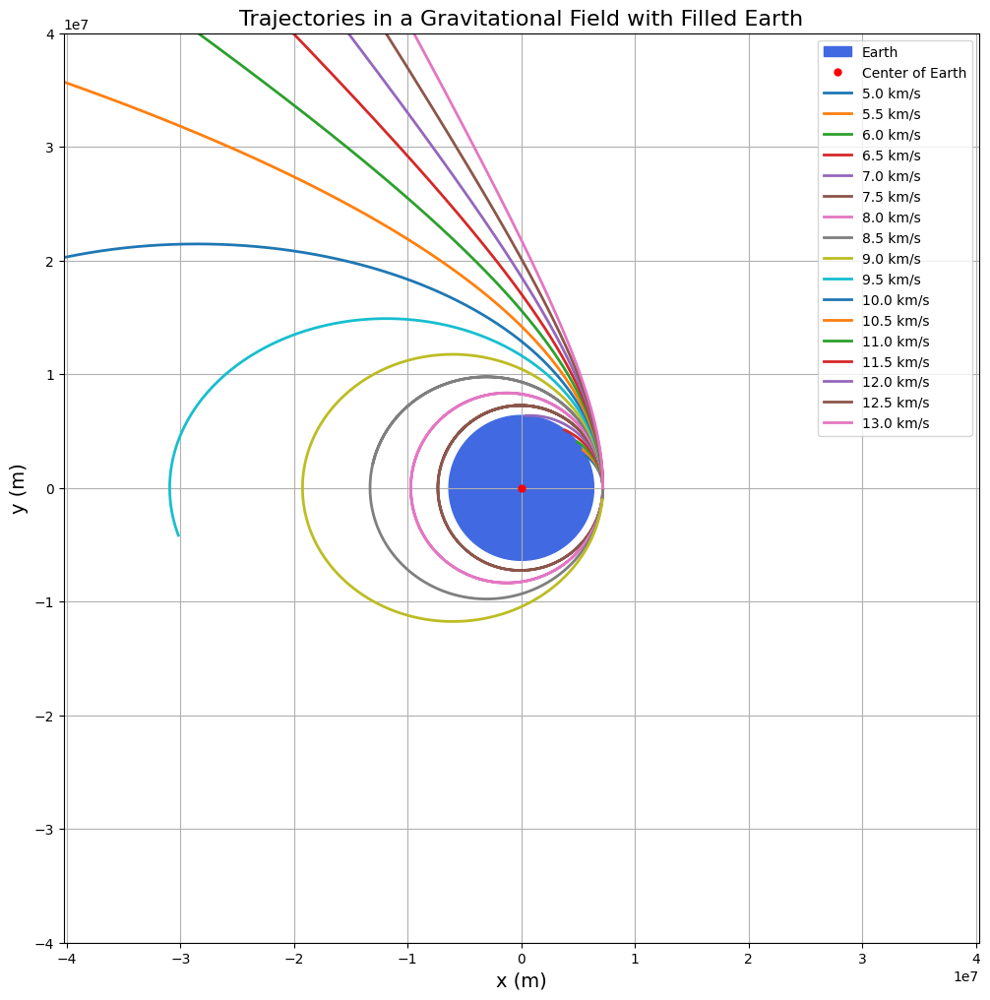
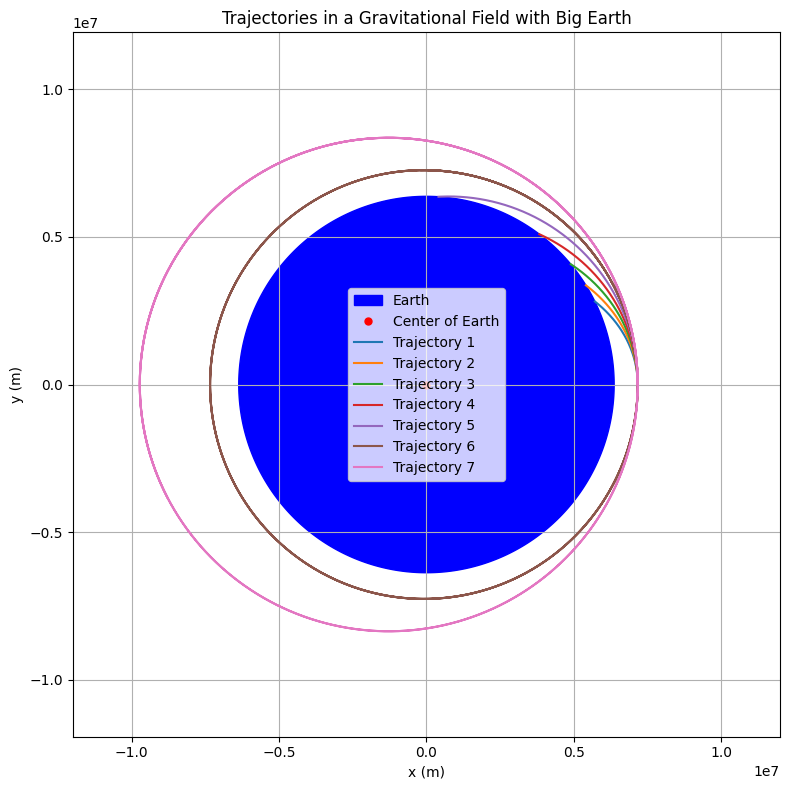

Problem 3
Trajectories of a Freely Released Payload Near Earth
1. Theoretical Background
When a payload is released from a moving spacecraft near Earth, its trajectory depends on:
- Initial position (altitude above Earth's surface),
- Initial velocity (magnitude and direction),
- Gravitational force acting toward Earth’s center.
The motion is governed by Newton’s Law of Universal Gravitation:
\[
F = \frac{G M m}{r^2}
\]
Where:
- \(F\) is the gravitational force,
- \(G = 6.67430 \times 10^{-11} \, \text{m}^3 \, \text{kg}^{-1} \, \text{s}^{-2}\) is the gravitational constant,
- \(M\) is Earth's mass (\(5.972 \times 10^{24} \, \text{kg}\)),
- \(m\) is the mass of the payload (cancels out),
- \(r\) is the distance from Earth's center.
The equation of motion becomes:
\[
\ddot{r} = -\frac{G M}{r^3} r
\]
Depending on the energy:
- Elliptical trajectory if total energy \(E < 0\),
- Parabolic trajectory if \(E = 0\),
- Hyperbolic trajectory if \(E > 0\).
Where total energy:
\[
E = \frac{1}{2} m v^2 - \frac{G M m}{r}
\]
Escape velocity at a given altitude:
\[
v_{\text{esc}} = \sqrt{\frac{2 G M}{r}}
\]
If \(v < v_{\text{esc}}\): payload remains bound (orbit or reentry).
If \(v \geq v_{\text{esc}}\): payload escapes Earth’s gravity.
2. Numerical Simulation Approach
We solve the second-order differential equation for motion numerically using time stepping (Euler or Runge-Kutta 4th order).
At each time step:
- Update acceleration based on current position.
- Update velocity based on acceleration.
- Update position based on velocity.
We assume:
- No atmospheric drag (valid at high altitudes).
3. Python Script
import numpy as np
import matplotlib.pyplot as plt
# Constants
G = 6.67430e-11 # gravitational constant, m^3/kg/s^2
M_earth = 5.972e24 # mass of Earth, kg
R_earth = 6371e3 # radius of Earth, meters
# Function to compute acceleration
def acceleration(r):
r_norm = np.linalg.norm(r)
return -G * M_earth * r / r_norm**3
# Runge-Kutta 4th order method
def rk4_step(r, v, dt):
k1_v = acceleration(r)
k1_r = v
k2_v = acceleration(r + 0.5*dt*k1_r)
k2_r = v + 0.5*dt*k1_v
k3_v = acceleration(r + 0.5*dt*k2_r)
k3_r = v + 0.5*dt*k2_v
k4_v = acceleration(r + dt*k3_r)
k4_r = v + dt*k3_v
r_new = r + (dt/6)*(k1_r + 2*k2_r + 2*k3_r + k4_r)
v_new = v + (dt/6)*(k1_v + 2*k2_v + 2*k3_v + k4_v)
return r_new, v_new
# Simulation function
def simulate_trajectory(r0, v0, t_max, dt):
r = r0.copy()
v = v0.copy()
positions = [r0]
for _ in range(int(t_max/dt)):
r, v = rk4_step(r, v, dt)
positions.append(r)
if np.linalg.norm(r) < R_earth: # collision with Earth
break
return np.array(positions)
# Initial conditions
altitude = 800e3 # 800 km above Earth's surface
r0 = np.array([R_earth + altitude, 0]) # starting position on the right
v_magnitudes = np.arange(5e3, 13.5e3, 0.5e3) # from 5 km/s to 13 km/s
# Plot setup
fig, ax = plt.subplots(figsize=(12,12))
# Draw Earth (darker blue)
theta = np.linspace(0, 2*np.pi, 500)
earth_x = R_earth * np.cos(theta)
earth_y = R_earth * np.sin(theta)
ax.fill(earth_x, earth_y, color='royalblue', label="Earth")
# Mark center of Earth
ax.plot(0, 0, 'r.', markersize=10, label="Center of Earth")
# Simulate and plot for each velocity
for idx, v0_mag in enumerate(v_magnitudes):
v0 = np.array([0, v0_mag]) # vertically shooting
trajectory = simulate_trajectory(r0, v0, t_max=15000, dt=1)
ax.plot(trajectory[:,0], trajectory[:,1], lw=2, label=f'{v0_mag/1e3:.1f} km/s')
# Final plot settings
ax.set_xlabel('x (m)', fontsize=14)
ax.set_ylabel('y (m)', fontsize=14)
ax.set_title('Trajectories in a Gravitational Field with Filled Earth', fontsize=16)
ax.legend(fontsize=10)
ax.grid(True)
ax.axis('equal')
ax.set_xlim(-4e7, 4e7)
ax.set_ylim(-4e7, 4e7)
plt.show()

